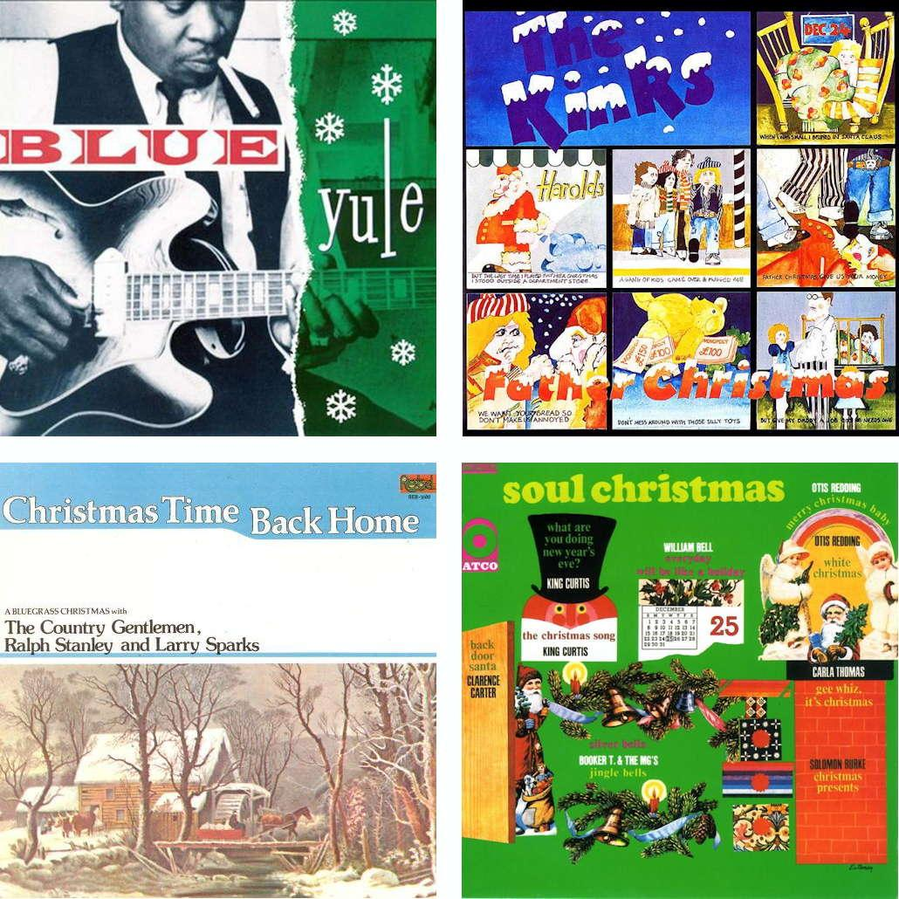

1 min read

The Christmas season is one of my favorite times of year, and I've acquired a huge collection of holiday music over the years, so I thought I would share my thoughts about a few of my favorites with all of you. So here are 20 of my favorite holiday tracks. I've tried to select as wide a variety of songs as possible, mixing different artists and styles.
And all of these songs but one can be heard on Apple Music in the Words about Songs - Christmas playlist.
Enjoy!